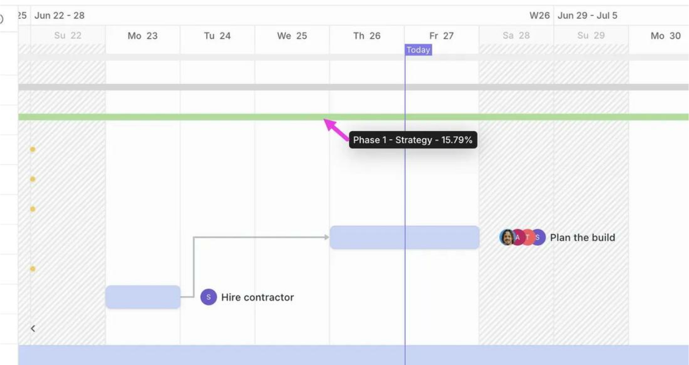
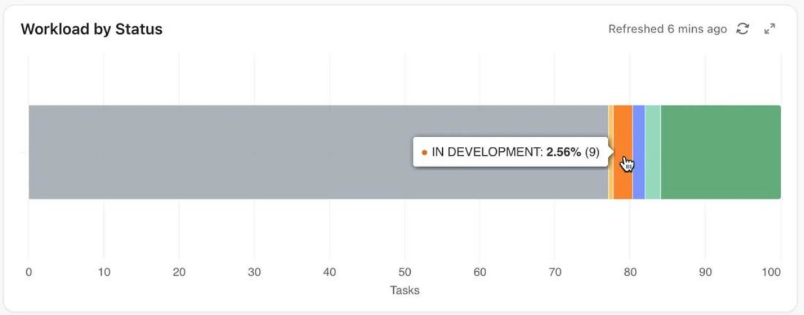

ClickUp Review: Notion's Customization, Without the Homework
Try it: Visit ClickUp.
7.1 We Used It Score, out of 10
Ratings by business type
Best suited to: small and growing teams that want one app for tasks, docs and dashboards, agencies juggling several clients, operations teams.
Scored on our ten metric We Used It Score. See How We Rate for the method and what each number means.
We Used It HQ: Streamlining business, whatever your size
The short answer
ClickUp matches Notion for customization and beats it for first day friendliness, then makes its solo case on a free tier that looks generous until you read the meter. For teams the value flips: unlimited members even on the free plan, per user pricing with no seat minimums, and a proper native Gantt chart. It is the most enjoyable tool in this series to use and one of the easiest to misprice, because there are currently two generations of ClickUp plans in the wild. A workspace created today is quoted Core at $9 and Business at $17 per user per month. A workspace created last year may still sit on Unlimited at $7 and Business at $12, and will stay there until ClickUp moves it. Same product, two price lists, and which applies to you depends on when you arrived.
What it is
ClickUp is the everything app pattern applied to projects: tasks, docs, goals, dashboards, whiteboards and chat in one workspace, with more view types than anyone else here. Where Notion asks you to assemble your system from pages and databases, ClickUp hands you the parts pre built. The hierarchy runs workspace, Space, Folder, List, task, subtask, and nearly every layer can be reshaped: custom fields, custom statuses, custom task types. That depth is the product. It is also the trap.
Running real projects in it: what actually happened
I ran ClickUp the way I ran everything in this series: solo, on engineering projects planned waterfall style. A work breakdown with tasks nested inside tasks, a budget to keep an eye on, task planning day to day, and a Gantt chart that has to stay honest as dates move. I tested it head to head against Notion, because on paper the two make the same promise: build the system you want rather than rent the one you are given.
On customization, the paper is right. ClickUp is on a par with Notion, and I would struggle to name a project shape either tool cannot be bent into. The difference is the first week. Notion charges its learning curve up front, in commands and database concepts you have to learn before your first project behaves. ClickUp's UX/UI is easier to get on with straight away: the parts arrive pre built, and the work is rearranging rather than assembling. For the first few days it felt like the same depth with the homework removed, and it was genuinely enjoyable to use.
Then the two findings that follow me out of every tool in this series arrived, wearing ClickUp colors. The first is the Gantt. The chart itself is real: dependencies, drag rescheduling that shifts the chain behind a moved task, everything Notion cannot do at any price. But the professional layer is fenced. On the free plan the Gantt runs on a meter of 60 uses, and uses are cumulative: they do not reset, ever. Critical path is trial uses on Core and unlimited only on Business and up, and baselines live on Business and up. For waterfall work, critical path and baselines are not garnish. They are how you prove what a slipped date actually did to the finish.
The second finding is progress. ClickUp's automatic progress field rolls subtask completion up one level and stops. Nest a second level, which any real breakdown structure does, and a mid level task can sit at 0 percent while everything underneath it is finished. ClickUp's own staff, on its feature request board, confirm that the recursive roll up is still a planned feature rather than a shipped one. The number a project manager reports upward is exactly the number this gets wrong.
So I chose Notion, for one unglamorous reason: as a solo user, its free tier offered more room to live in. ClickUp's free workspace holds 60 MB of files in total, and its feature meters run down as you learn. Notion's free tier, for one person, largely leaves you alone. ClickUp was the more enjoyable tool, and the head to head was close. Enjoyable lost to storage and arithmetic.
Where it wins
- Customization on par with Notion, with a friendlier start. The UX/UI is easier to get on with straight away, no command syntax to learn before your first project behaves
- A real native Gantt chart, with dependencies and drag rescheduling that shifts the chain. Unlimited Gantt charts arrive on Core at $9 per user. Notion cannot do this at any price
- Honest per user pricing. No seat minimums, no seat buckets: one user buys one seat, five users buy five. After monday.com's three seat floor, that plainness deserves naming as a feature
- Guests are not an ambush. Core includes 5 guest seats for a one user workspace and 2 more per paid user, so clients can look and comment without quietly becoming paid seats
- A free plan with unlimited tasks and unlimited members. For a small team that is a genuine starting point, not a demo with a countdown
- Depth everywhere once you pay: automations at 1,000 actions a month on Core and 10,000 on Business, dashboards, workload views, goals and docs in the same workspace as the tasks

Where it frustrates
- The free tier's fine print. Storage is capped at 60 MB in total, and the advanced features run on use counters that do not reset: 60 Gantt uses, 60 custom field uses, 60 dashboard uses, cumulative for the life of the workspace. A solo user testing seriously can spend the Gantt allowance learning where the buttons are
- The Gantt's professional depth is fenced. Critical path is trial only until the Business tier, and baselines live on Business and up. Dependency types are waiting on and blocking only, no lag, and there is no Microsoft Project import
- Task progress breaks exactly where waterfall work lives. The automatic progress field rolls up subtask completion one level only. Nest a second level and mid level tasks can sit at 0 percent while their subtasks are complete. ClickUp's own staff confirm the recursive roll up is still a planned feature
- Two price lists at once. New workspaces are sold Core and Business at $9 and $17; existing workspaces keep Unlimited and Business at $7 and $12 until noticed. Budgeting from a colleague's screenshot or last year's invoice can put you on the wrong ladder entirely
- The same rabbit hole as Notion, wearing different clothes: when everything is customizable, customizing becomes the hobby
- No Finta link. ClickUp cannot sync live bank data the way Notion can, a small thing until your project budget lives in the tool
The AI, and its price tag
ClickUp's AI story now comes in two versions, because the plans do. On the plans ClickUp sells today, the separate AI add on is gone: AI is folded into the seat as a pooled credit allowance, 1,000 credits per user per month on Core, 1,500 on Business, 3,000 on Enterprise and 10,000 on MAX, spent across the writing, search, agents and AI fields. On the older plans many customers still sit on, AI is an add on: ClickUp Brain at $9 per user per month, and an Everything AI tier at $28. The add on has a sting worth knowing if you are on that ladder: it applies to every member in the workspace, not just the people who asked for it, so a five person team on the old Business plan pays $12 a head for the plan and $9 a head again for Brain, $21 a seat in total before anyone has written a prompt.
Whichever ladder you are on, our duplication warning applies. Brain writes, summarizes and searches across your workspace, which is useful, but if you already pay for ChatGPT or a similar general subscription, much of that capability is already in your pocket. What a chatbot in another tab cannot do is act inside the tool: updating tasks, drafting from your own project data, searching the workspace itself. Judge the AI on those jobs, not on the prose tricks. One more consequence of the restructure: on the new plans you no longer choose whether to buy the AI. You choose how much of it you get, which makes the tier decision partly an AI decision whether you wanted that or not.
Reporting and dashboards
Dashboards are a headline feature and they are good: cards for workload, progress, time and custom calculations that an exec can read at a glance. The free plan meters them at 60 uses, which tells you ClickUp knows exactly what they are worth. Advanced dashboards sit on the new Business tier, and on the old Business plan dashboards were unlimited; either way, reporting properly starts at Business money. Two honest caveats. First, dashboards sit on the harder end of the learning curve in this series: the cards reward a team that keeps its fields and statuses tidy, and punish one that does not, because the chart faithfully displays the mess. Second, the one level progress roll up follows you here. A dashboard can only chart the numbers the tasks carry, and on a deep hierarchy the progress number is the one that is wrong, so serious waterfall reporting means flattening your structure or accepting the limit.

Pricing
Checked November 2026, against ClickUp's own pricing page and help center. ClickUp is mid restructure, and the table below is the ladder on sale to new workspaces today. ClickUp's help center is explicit: existing workspaces keep their current plan and price until ClickUp sends a notice; any price update then lands at renewal, no earlier than January 2027, and some workspaces will see no price update at all. Per user per month, before tax.
| Plan | Billed annually | Billed monthly | Automation actions per month | AI credits | The gate that matters |
|---|---|---|---|---|---|
| Free Forever | $0 | $0 | 100 | 500, one time, per workspace | Unlimited tasks and members, but 60 MB of storage for the whole workspace, and Gantt, custom field and dashboard uses capped at 60 each, never resetting |
| Core | $9 | $12 | 1,000 | 1,000 per user per month, pooled | Unlimited storage, Spaces and Gantt charts, and goals; critical path is trial uses only; 5 guest seats for a one user workspace |
| Business | $17 | $25 | 10,000 | 1,500 per user per month, pooled | Unlimited critical path and baselines unlock here, plus advanced dashboards, private views, timesheets and resource management |
| Enterprise | Custom, by quote | Custom, by quote | 1,000,000 | 3,000 per user per month, pooled | SSO, SCIM, audit logs and governance controls |
| MAX | $100 | $120 | 1,000,000 | 10,000 per user per month, pooled | The full AI engine: unlimited AI fields, notetaker, autopilot agents and AI dashboard cards, on top of everything in Enterprise |
If your workspace predates the restructure, your ladder still reads differently: Unlimited at $7 per user per month billed annually, $10 monthly, and Business at $12, or $19 monthly, with AI sold separately as the Brain add on at $9 or Everything AI at $28 per user per month. Those prices hold until your notice arrives. A Business Plus tier also appears in ClickUp's help center and in some accounts, between Business and Enterprise; it is not on the public pricing page, so we have left it out of the table rather than present a price ClickUp does not publish there.
What the new ladder means in money, at the sizes small businesses actually buy. Totals are per month on annual billing, before tax:
| Users | Core | Business |
|---|---|---|
| 1 | $9 | $17 |
| 3 | $27 | $51 |
| 5 | $45 | $85 |
Read the first row: one user can buy one seat. There is no minimum and no bucket rounding, so the team sizes in this table are the team sizes you actually have. For comparison, the same five users on the legacy Business plan pay $60 a month until their workspace is moved, and $35 on legacy Unlimited. The restructure is a real price rise at Business level, $12 to $17 a seat, partly offset by the AI credits now bundled in where Brain used to cost $9 on top. Whether that trade favors you depends on whether you wanted the AI.
Try it:
Visit ClickUpIf ClickUp is not the one: the alternatives
Three tools from this series cover the same ground with different compromises. Each score below is the We Used It Score from its own full review on this site.
- monday.com, We Used It Score 6.9. The first impression champion: the best UX/UI in this series and a good Gantt, and the tool our reviewer would have picked on product alone. The catch is the bill: seats are sold in buckets with a three seat minimum, so a solo user pays $57 a month for the Pro tier
- Notion, We Used It Score 7.1. What our reviewer actually chose. Customization on a par with ClickUp, documents and projects in one place, and a free tier a solo user can genuinely live on. The price is the learning curve up front, no native Gantt at any price, and progress percentages you have to build yourself with rollups and formulas
- Asana, We Used It Score 6.8. The structured team alternative: hierarchy, portfolios and cross project control for teams that have outgrown boards, with capable scheduling gated up its tiers and seats billed in steps
Questions buyers actually ask
Is the free plan usable for real work? For lists, boards and day to day task management, yes: tasks and members are unlimited, which is more than most rivals offer at $0. The limits are storage and meters. The whole workspace shares 60 MB of file storage, and Gantt charts, custom fields and dashboards each run on 60 uses that never reset. A small team can work on it. A solo user evaluating the Gantt seriously will spend a noticeable share of the allowance just learning the tool.
Which tier unlocks a proper Gantt? The chart itself is unlimited from Core at $9 per user per month. The professional layer is a tier up: unlimited critical path and baselines are Business and up, $17 on the new plans or $12 if your workspace is still on the legacy ladder. On Core, critical path is trial uses only. If baselines are how you report slippage to clients, budget for Business from the start.
Does progress roll up through nested subtasks? No. The automatic progress field rolls subtask completion up one level only. Build a three level breakdown, the normal shape of real project work, and the middle level can report 0 percent while its own subtasks are complete. ClickUp's staff confirm a recursive roll up is a planned feature, not a shipped one. The workarounds are flattening the structure or tracking progress in a custom field by hand, and both are admissions that the feature is missing.
What does the AI cost on top? On the plans sold today, nothing extra to start: each seat carries a pooled monthly credit allowance, 1,000 per user on Core and 1,500 on Business, and the old add ons are no longer sold on those plans. On a legacy workspace the add ons are the price: Brain at $9 per user per month and Everything AI at $28, charged for every member in the workspace whether they use it or not.
Can you export everything if you leave? Your task data can be exported, so the raw work comes with you. What does not travel is the system around it: automations, dashboard layouts, views and custom field logic stay behind. Treat an exit as a rebuild in the new tool with your data as raw material, not as a migration, and remember that before you invest a month in customizing.
Verdict
Enjoyable, deep and genuinely customizable, with the friendliest first week of any tool here that offers real depth. Our reviewer chose Notion over it for one unglamorous reason: as a solo user, Notion's free tier offered more room to live in. Bring a team and the answer likely flips, provided your projects are one level of subtasks deep or you are paying for Business, where the scheduling tools unlock. And check which generation of plans your signup screen is quoting before you budget. The two ladders differ by real money, and the date on your workspace decides which one is yours.
Try it: Visit ClickUp
Research note: Pricing checked against ClickUp's own pricing page and help center, November 2026. ClickUp is mid restructure: new workspaces start on the Core, Business, Enterprise and MAX plans in the table; existing workspaces keep Unlimited and Business at the older prices until ClickUp sends a notice, with price updates at renewal and none before January 2027. Gantt gating, use limits and the one level progress roll up checked against ClickUp's help center and its feature request board, November 2026. Usage history is the author's own. First published November 2026.
ClickUp is a registered trademark and service mark of Mango Technologies, Inc. DBA ClickUp.
Watch: the official video
“ClickUp Overview”, from the official ClickUp YouTube channel.